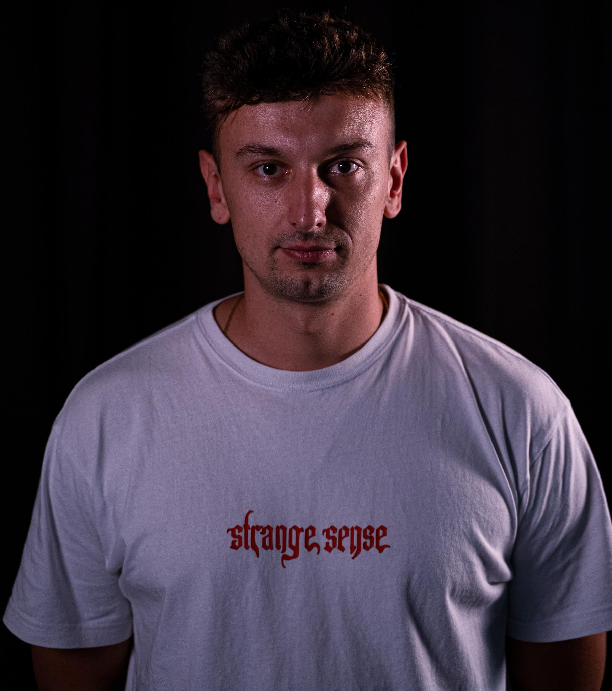

Welcome to my Webportfolio!
My name is Marko Rajic.

About me
Just a guy who fell in love with coding.
Education
- High School Diploma - KSC "Petar Barbaric" Travnik, Bosnia and Herzegowina (2011-2015)
Completed a comprehensive high school education with a strong foundation in various subjects.
- Media Designer for Digital and Print - Macromedia, Munich, Germany (2023-present)
Currently pursuing studies in digital and print media design. gaining expertise in visual
communication, graphic design and digital content creation
Work experience
- Mytheresa GmbH - Returns Department (2015-2020)
- Inspected returned merchandise for quality control.
- Communicated with customer care regarding product damage and irregularities
- Exquisa Karwendel-Werke GmbH - Fresh Cheese Production (2020-2022)
- Worked in the fresh cheese production department, ensuring quality
and efficiency in the manufacturing process.
- Tipico - Cashier (May 2022 - November 2022)
- Handled customer transactions and provided
assitance in a betting shop enviroment.
- Gisec GmbH - Cleaning Services (November 2022 - April 2023)
- Maintained cleanliness and hygiene standards in various facilities
My Skills
- Programming Languages: HTML, JavaScript, Python
- Design Tools: Adobe Photoshop, Adobe Illustrator, Adobe InDesign
- Languages:
Contact me
Fell free to contact me for my services.